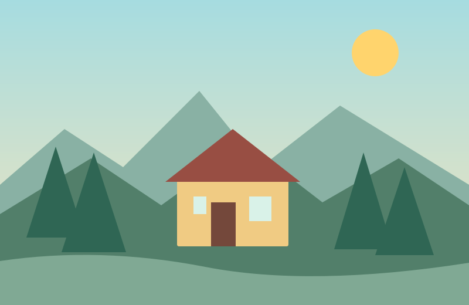
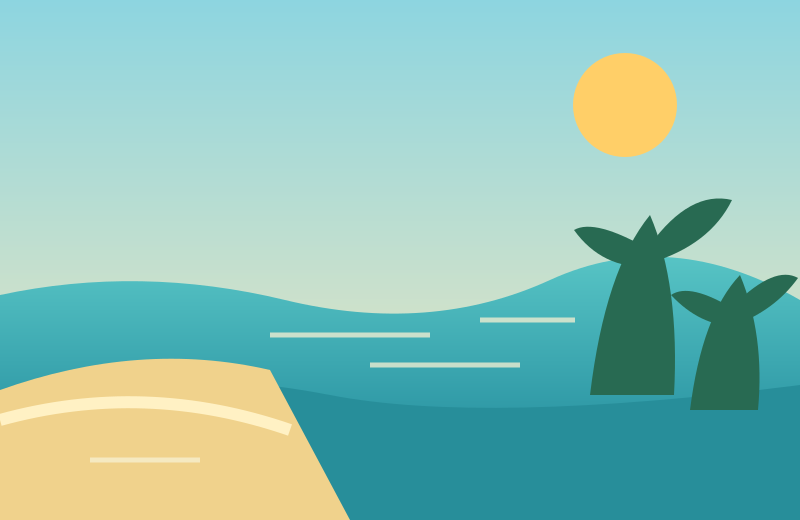
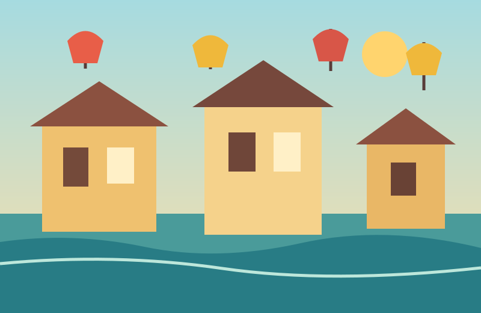

Chuẩn bị cho chuyến đi
Mẹo nhỏ cho chuyến đi vui
Vài gợi ý đơn giản giúp chuyến đi của bạn dễ dàng và thoải mái hơn.

01 · Lên kế hoạch
Chọn nơi mình thật sự muốn đến
Trước chuyến đi, hãy tìm hiểu thời tiết, cách di chuyển và thời gian mở cửa của các điểm tham quan. Ghi lại một vài địa điểm yêu thích để tránh mất thời gian khi đến nơi.

02 · Chuẩn bị hành lý
Mang vừa đủ những thứ cần thiết
Hãy chuẩn bị giấy tờ, điện thoại, sạc pin, nước uống và trang phục phù hợp. Một chiếc túi gọn nhẹ sẽ giúp bạn di chuyển dễ dàng hơn.

03 · Trải nghiệm
Tôn trọng nơi bạn ghé thăm
Giữ gìn vệ sinh, tôn trọng phong tục địa phương và hỏi trước khi chụp ảnh người khác. Những hành động nhỏ giúp chuyến đi thân thiện hơn với mọi người.
Điều quan trọng nhất
Hãy đi với tâm trạng thoải mái, giữ an toàn và tận hưởng từng trải nghiệm của mình.
Chọn điểm đến tiếp theo